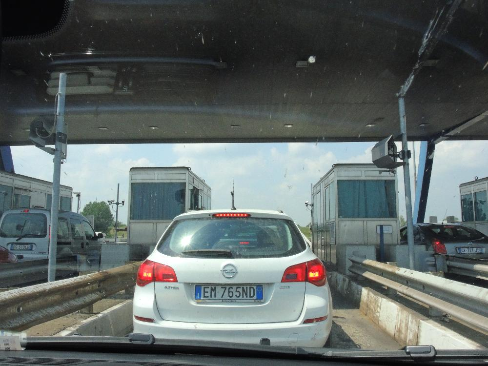
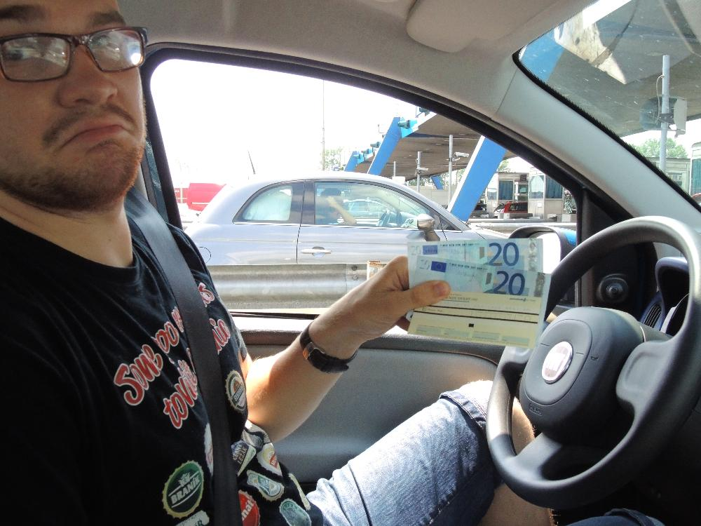
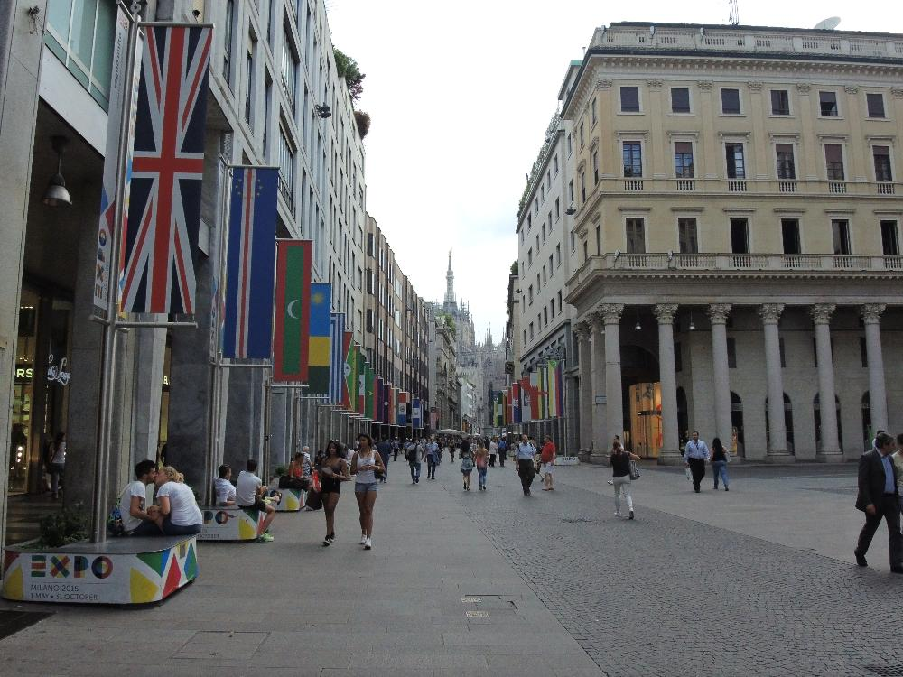

Переезд в Милан. День девятый.
24.06.2014
- 350 км Италии.
- Миланский собор
- Мировые бренды
- Спрятавшиеся от дождя миланцы
24.06.2014
Пора панду сдать в ее приют. Это я про машину.
Так злые итальяно-милицио наказывают неоплативших парковку.
В европе тоже есть пробки, это я поравалитикам!
 Каждая автомагистраль заканчивается и начинается вот таким пунктом, где при выезде на дорогу дают квитанцию, которую ты должен отдать при съезде с магистрали - таким образом собираются деньги на обслуживание дороги( я так думаю, это и есть налог на дорогу).
 Для информации: за 300 км от Флоренции до Рима мы заплатили - 32 евро(для тех кто начал вспоминать курс валют- 1 евро приблизительно 50 рублей)
В какой-то момент Милан немножко напомнил Воронеж.
Сдали панду - итого 403 евро за 5 дней. Вообще 250, но я еще зеленый водитель, поэтому страховка обошлась так дорого.
Наташа покупает билет на автобус и грустит по панде.
 В Милане проходит какое-то экспо, но Российсикого флага мы не увидели, - скорее всего это и есть санкции.
В центре пытались собрать тусовку брейкеры. Мне очень нравится, как отвлекся самый правый.
Миланский собор и кто-то очень хотящий попасть в кадр. Около 5 столетий строился собор - вот уж у кого деньги ни отбились. А предназначался он как подношение деве Марии с просьбой о наследнике королевскому роду Висконти. Мальчики родились, но именно на них этот род и прекратился.
Найдите Наташу
Влиятельный мужчина на вздымленном коне. Лева с книгой как всегда охраняет.
Хочу сумку..
Купииии...
О боже это она!
Магазы уже закрыты, но похоже мы придем снова)
Пошел дождь и все попрятались на улице с крышей
И мы тоже оказались под крышей. Разглядывали людей и витрины уже закрывшихся магазов
В модном костюме на дедовском велике. Интересный мужчина
Мужские тапочки из кожи крокодильчика
Женские тапочки
Завтра исследуем Милан потщательней